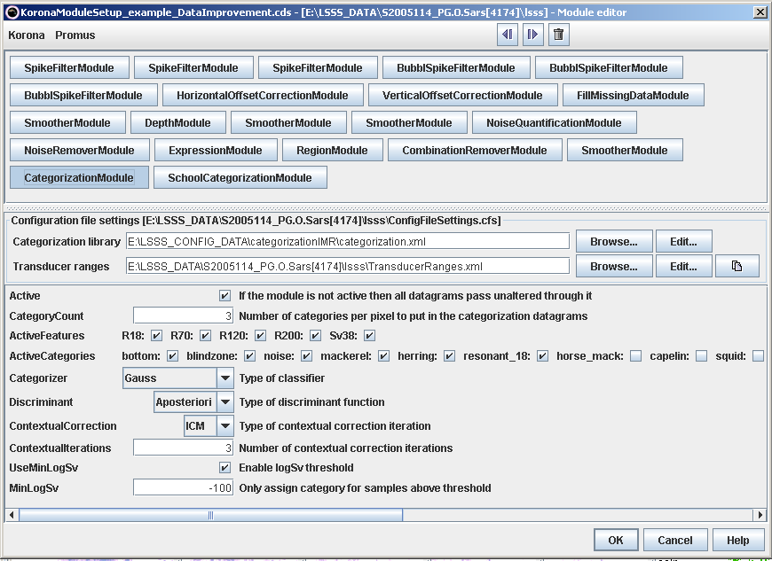
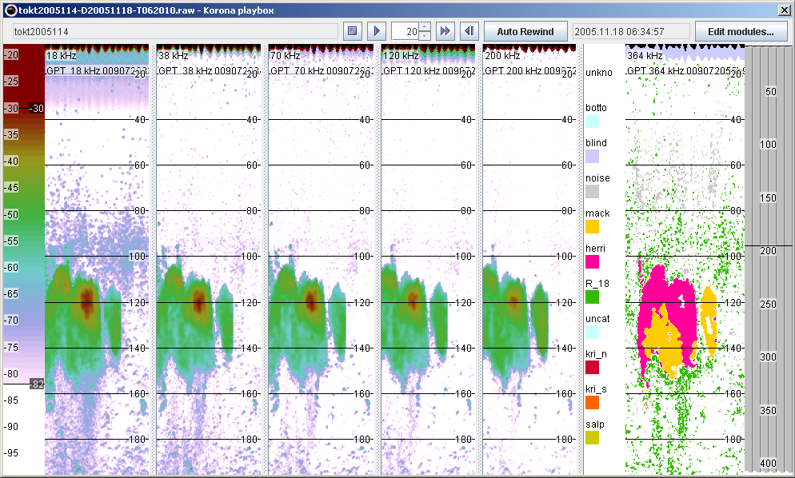

The acoustic categories may be a single species (e.g. Atlantic mackerel), a group of species (e.g. swimbladdered fish)
and sometimes even a subset of a species (different year-classes of sandeel). The figure below shows an example
of a module setup used to identify acoustic categories. The CategorisationModule is placed after the data
improvement modules, and is shown in a somewhat darker grey colour than the other modules.

The figure below shows the result of the acoustic categorisation. The
CategorisationModule adds a new datagram, and the results are visualised in KORONA by
setting the colour-scale (Use private colourmap) "Categories".

References
Korneliussen, R. J., and Ona, E. 2002. An operational system for processing and
visualizing multi-frequency acoustic data. – ICES Journal of Marine Science, 159:
293–313.
Korneliussen, R. J., and Ona, E. 2003. Synthetic echograms generated from the relative
frequency response. – ICES Journal of Marine Science, 60: 636–640.
Korneliussen, R. J., Heggelund, Y., Eliassen, I. K., and Johansen, G. O. 2009. Acoustic species identification of schooling fish. – ICES Journal of
Marine Science, 66: 1111–1118.
Pedersen, G., and Korneliussen, R. J. 2009. The relative frequency response derived from individually separated targets of northeast Arctic cod
(Gadus morhua), saithe (Pollachius virens), and Norway pout (Trisopterus esmarkii). – ICES Journal of Marine Science, 66: 1149–1154.
Korneliussen, R. J. 2010. The acoustic identification of Atlantic mackerel. – ICES Journal of Marine Science, 67: 1749–1758.